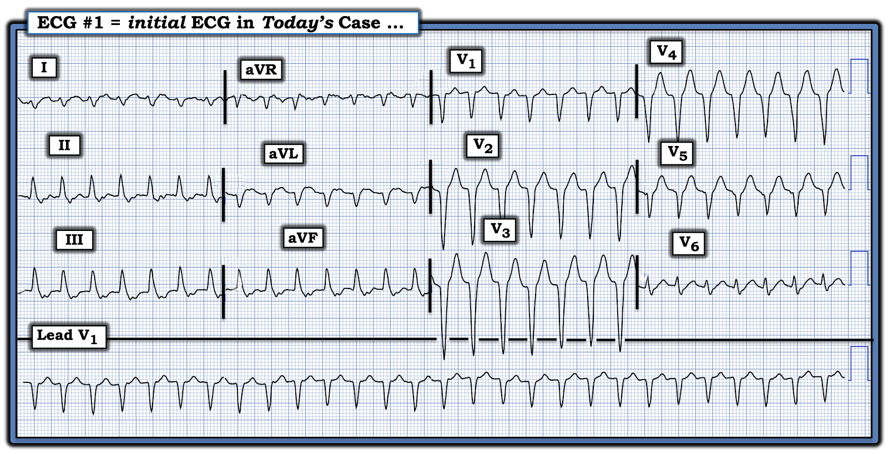
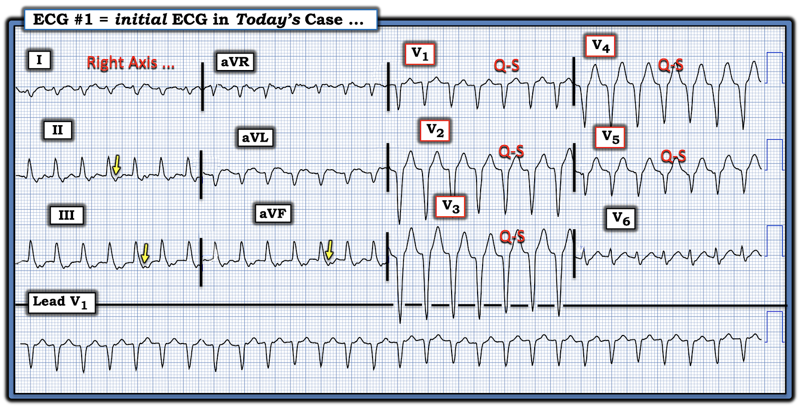
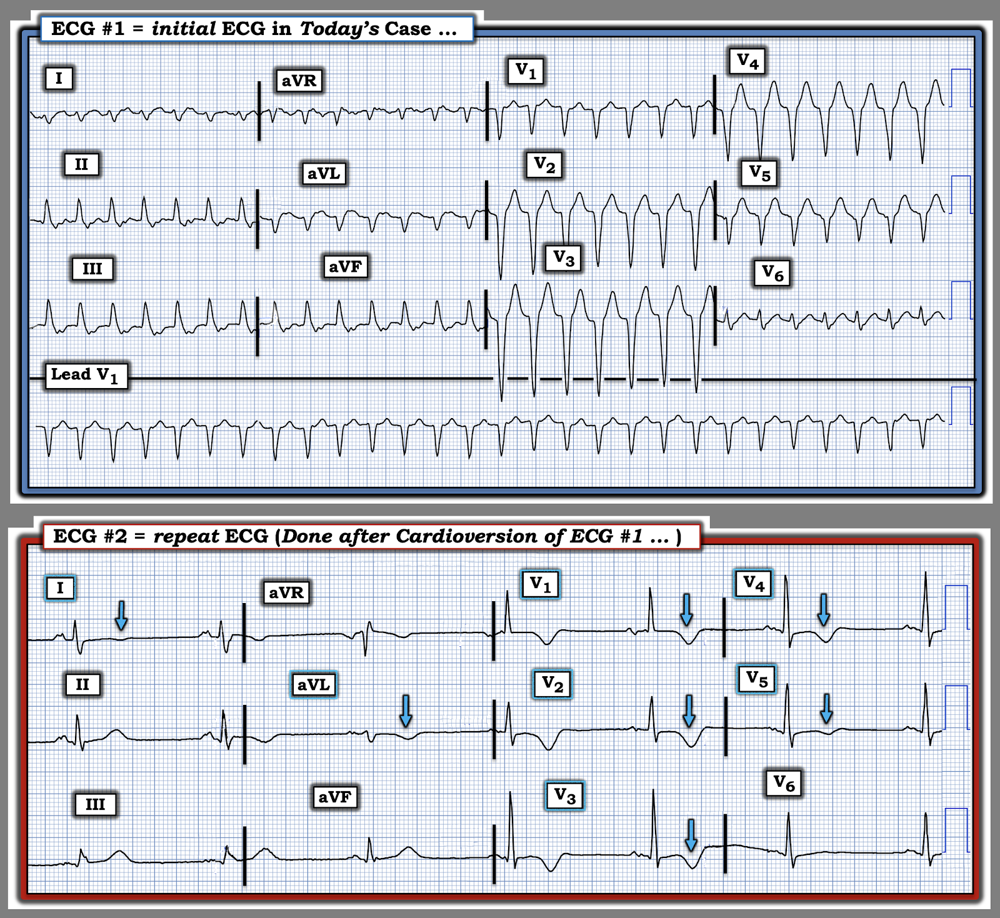

ECG Blog #544 — Nguyên nhân là nhồi máu cơ tim cấp?
Điện tâm đồ ở Hình 1 được ghi ở một người đàn ông ngoài 60 tuổi — đến khoa cấp cứu (Emergency Department) vì "hồi hộp đánh trống ngực". Ông ổn định huyết động với nhịp này.
- Nhìn chung, trước đây bệnh nhân khỏe mạnh, không có tiền sử bệnh tim đã biết.
- Dù vậy — ông hút thuốc lá nhiều, và đang dùng một số thuốc hướng thần.
CÂU HỎI:
- Bạn sẽ diễn giải nhịp ở Hình 1 như thế nào?
- Bạn chắc chắn đến mức nào về chẩn đoán của mình?
- Bạn nên điều trị bệnh nhân ra sao?


Suy nghĩ của tôi:
Điện tâm đồ ở Hình 1 là một WCT đều (nhịp nhanh QRS rộng — Wide-Complex Tachycardia) tần số ~170/phút, không thấy rõ dấu hiệu của sóng P xoang. Theo kinh nghiệm từ nhiều ca nhịp WCT đều mà chúng ta đã gặp trong ECG Blog này:
- Về mặt thống kê — 80-90% nhịp WCT đều không có sóng P xoang rốt cuộc sẽ là VT. Vì vậy — hãy coi là VT cho đến khi chứng minh được điều ngược lại. Hãy điều trị bệnh nhân theo hướng đó.
- Dù vậy, vì bệnh nhân này đang ổn định huyết động — bạn có ít nhất một chút thời gian để xem kỹ hơn nhịp này, tìm những đặc điểm có thể làm tăng (hoặc giảm) mức độ chắc chắn chẩn đoán so với khả năng ban đầu theo thống kê là 80-90% VT.
Trong số các đặc điểm điện tâm đồ tôi tìm kiếm có:
- Trục mặt phẳng trán.
- Dấu hiệu hoạt động của nhĩ.
- Hình thái QRS trong nhịp WCT.
===============================
Trục mặt phẳng trán:
Phát hiện một trục mặt phẳng trán lệch cực độ trong WCT có giá trị dự báo VT rất cao. MẤU CHỐT để áp dụng tiêu chuẩn này — là hiểu rõ chúng ta định nghĩa "cực độ" như thế nào. Định nghĩa tôi ưa dùng xuất phát từ mục tiêu tìm một tiêu chuẩn chẩn đoán có độ đặc hiệu cao, mà nếu thỏa mãn — sẽ dự báo mạnh rằng nguyên nhân là VT.
- Do đó — định nghĩa của tôi về trục mặt phẳng trán "lệch cực độ" — là phức bộ QRS phải âm hoàn toàn ở chuyển đạo I và/hoặc ở chuyển đạo aVF.
- Như được làm nổi bật ở Hình 2 — quả thật có trục lệch phải rõ rệt ở điện tâm đồ #1, vì QRS biên độ nhỏ ở chuyển đạo I chủ yếu âm.
- Dù vậy — QRS ở chuyển đạo I không âm hoàn toàn, vì có thấy một sóng dương đầu tiên (sóng r) nhỏ nhưng chắc chắn hiện diện ở chuyển đạo này.
- Điều cốt lõi: Trục lệch phải rõ rệt ở Hình 2 nghiêng về VT. Tuy nhiên, vì QRS không âm hoàn toàn ở chuyển đạo I — giá trị phân biệt của một trục lệch phải nhưng không cực độ giảm đi đáng kể. Vì vậy, trục lệch phải ở điện tâm đồ #1 có giá trị chẩn đoán hạn chế, và không chứng minh được VT.
Dấu hiệu hoạt động của nhĩ:
Mặc dù không thấy sóng P xoang ở điện tâm đồ #1 — dường như có sóng P ngược dòng , như được làm nổi bật ở Hình 2 bằng các mũi tên VÀNG, tạo nên chỗ khía thấy ngay sau phức bộ QRS ở cả 3 chuyển đạo dưới.
- Dù vậy — các sóng P ngược dòng này dường như xuất hiện sau mỗi phức bộ QRS ở các chuyển đạo dưới. Vì cả các nhịp SVT vào lại (AVNRT, AVRT) lẫn VT đều có thể biểu hiện dẫn truyền VA 1:1 như ta thấy ở đây — phát hiện sóng P ngược dòng ở điện tâm đồ #1 không chứng minh được VT.
Hình thái QRS trong WCT:
Điều này khiến tôi còn lại việc đánh giá hình thái QRS, với hy vọng nâng khả năng chẩn đoán vượt quá mức 80-90% mà chúng ta có ngay từ đầu chỉ nhờ biết rằng nhịp hôm nay là một WCT đều không thấy rõ dấu hiệu của sóng P xoang.
- "Tin tốt" — là đánh giá hình thái QRS có thể giúp rất nhiều trong việc thu hẹp khả năng một nhịp WCT nhất định là hoặc VT hoặc SVT (nhịp nhanh trên thất — SupraVentricular Tachycardia) kèm BBB có từ trước (blốc nhánh — Bundle Branch Block) hoặc dẫn truyền lệch hướng (xem ECG Blog #196 để biết chi tiết).
- Như đã nhấn mạnh trong ECG Blog #211 — khả năng một nhịp WCT có nguồn gốc trên thất tăng đáng kể NẾU — hình thái QRS phù hợp với một trong các dạng blốc dẫn truyền đã biết (tức là RBBB, LBBB, LAHB hoặc LPHB; hoặc RBBB kèm một trong các blốc phân nhánh này).
Hãy NHÌN lại điện tâm đồ ban đầu của ca hôm nay:
- Hình thái QRS trong nhịp WCT có giống một trong các dạng blốc dẫn truyền đã biết không?


TRẢ LỜI:
- Như thấy ở Hình 2 — hình thái QRS trong nhịp WCT ở điện tâm đồ ban đầu của ca hôm nay hoàn toàn không giống dẫn truyền kiểu RBBB. Lý do là QRS âm hoàn toàn ở chuyển đạo V1, cũng như ở các chuyển đạo trước khác.
- Hình thái QRS cũng không giống dẫn truyền kiểu LBBB — vì QRS chủ yếu âm ở các chuyển đạo chi bên ( = chuyển đạo I và aVL).
- Như thể hiện ở Hình 2 — trục mặt phẳng trán lệch phải (tức là được xác định dựa trên việc QRS chủ yếu âm ở chuyển đạo I). Điều này ngay lập tức loại trừ dẫn truyền kiểu LAHB, vốn đòi hỏi trục mặt phẳng trán lệch trái rõ rệt. Dẫn truyền kiểu LPHB cũng ít có khả năng — vì không có hình thái qR điển hình ở các chuyển đạo dưới (tức là thấy sóng R đơn pha không có sóng q đầu tiên ở các chuyển đạo II,III,aVF).
Thay vào đó, nếu có thì — hình thái QRS phù hợp nhất với RVOT VT (VT đường ra thất phải — Right Ventricular Outflow Tract Ventricular Tachycardia):
- Như đã nêu trong ECG Blog #525 — hình thái QRS của RVOT đặc trưng bởi hình ảnh giống dẫn truyền kiểu LBBB ở các chuyển đạo ngực — kèm trục lệch phải trên mặt phẳng trán.
- Rõ ràng có trục mặt phẳng trán lệch phải ở Hình 2.
- Phần lớn các ca RVOT VT biểu hiện QRS chủ yếu âm ở 3 hoặc 4 chuyển đạo ngực đầu tiên — sau đó mới xuất hiện sóng R chủ yếu dương. Mặc dù vùng chuyển tiếp sang sóng R chủ yếu dương bị muộn ở Hình 2 — cuối cùng nó có xuất hiện ở chuyển đạo V6. Như vậy, mặc dù tăng tiến sóng R hơi không điển hình cho RVOT VT — hình thái QRS ta thấy ở Hình 2 vẫn có thể phù hợp với RVOT VT nếu sóng R dương hoàn toàn xuất hiện ở chuyển đạo V7 hoặc V8.
ĐIỀU CỐT LÕI:
Hình thái QRS ở Hình 2 phù hợp nhất với một dạng VT nào đó.
- Như đã bàn trong ECG Blog #525 và trong PHẦN BỔ SUNG ở cuối trang này — ý nghĩa lâm sàng của việc xác định có hay không một dạng VT do thiếu máu cục bộ so với RVOT VT — là các cân nhắc điều trị ban đầu có thể khác nhau. Dù vậy, vì hình thái QRS không giống bất kỳ dạng blốc dẫn truyền đã biết nào — khả năng nghiêng mạnh về một dạng nào đó của VT.
===============================
Ca bệnh hôm nay tiếp diễn . . .
Như đã nêu ở phần giới thiệu ca hôm nay — bệnh nhân ổn định huyết động khi ghi điện tâm đồ ban đầu. Quyết định được đưa ra là sốc điện chuyển nhịp cho bệnh nhân.
- Lưu ý của tác giả: Thường có nhiều hơn một cách để điều trị một bệnh nhân cụ thể. Như được điểm lại trong PHẦN BỔ SUNG bên dưới — một khi bạn xác định một nhịp WCT đều là VT phân nhánh, và biết rằng bệnh nhân nhiều khả năng bị VT vô căn (tức là VT khi không có bệnh tim nền) — Verapamil tĩnh mạch trở thành lựa chọn điều trị ưu tiên, với cơ hội tốt nhất để chuyển nhịp bằng thuốc về nhịp xoang. Dù vậy — việc không có sóng R dương ở các chuyển đạo trước cho ta biết đây không phải VT phân nhánh, nên Verapamil không được chỉ định (và thậm chí — có vẻ chống chỉ định vì tác dụng giãn mạch và inotrop âm của thuốc).
- Xét tuổi và tiền sử của bệnh nhân hôm nay (một nam giới ngoài 60 tuổi hút thuốc lá lâu năm, đồng thời đang dùng một số thuốc hướng thần) — khả năng nhịp ở Hình 2 là một dạng VT vô căn từ đường ra trở nên thấp hơn. Điều này càng đúng khi có phức bộ QS ở các chuyển đạo V1 đến V5, với vùng chuyển tiếp chỉ bắt đầu giữa chuyển đạo V5 và V6. Vì vậy tôi sẽ không chọn Adenosine cho bệnh nhân này.
- Vì bệnh nhân vẫn ổn định huyết động trong nhịp WCT hôm nay — dùng một thuốc chống loạn nhịp (như Amiodarone tĩnh mạch) hoặc tiến hành ngay sốc điện chuyển nhịp đồng bộ là những lựa chọn tôi ưu tiên.
Điện tâm đồ ghi lại sau sốc điện chuyển nhịp được trình bày ở bản ghi phía dưới trong Hình 3.
CÂU HỎI:
- Điện tâm đồ sau chuyển nhịp có gợi ý rằng nguyên nhân gây VT ở bệnh nhân này là nhồi máu cơ tim cấp không?


Suy nghĩ của tôi:
"Tin tốt" — là sốc điện chuyển nhịp đồng bộ đã chuyển thành công bệnh nhân về nhịp xoang, dù kèm nhịp chậm với tần số chỉ dưới 50/phút.
- Sóng P có khía lan tỏa gợi ý một rối loạn dẫn truyền trong nhĩ — dù sóng P dương cùng khoảng PR hằng định xác nhận đây là nhịp xoang.
- QRS cùng lắm chỉ giãn rộng rất nhẹ (khoảng 0.10-0.11 giây). Tuy nhiên QRS dương hoàn toàn ở chuyển đạo V1 là bất thường rõ rệt. Đây là hậu quả của RBBB không hoàn toàn (có thấy sóng S tận hơi rộng ở các chuyển đạo bên I và V6) — blốc phân nhánh vách trái (một hiện tượng ít gặp — nhưng có thể tạo ra lực khử cực hướng ra trước nổi bật) — RVH (do QRS không quá rộng, dương hoàn toàn ở chuyển đạo V1) — hay một sự kết hợp của các yếu tố này, thì không chắc chắn được nếu chỉ dựa vào một bản ghi sau chuyển nhịp này.
- Tuy nhiên, phát hiện đáng chú ý nhất ở điện tâm đồ #2 — là sóng T đảo ngược lan tỏa, đặc biệt sâu ở các chuyển đạo trước (các mũi tên XANH LAM ở Hình 3).
Nhận định:
Một lần nữa, "tin tốt" là bệnh nhân này không còn ở nhịp WCT đều như lúc nhập viện! So sánh giữa 2 bản ghi ở Hình 3 cho thấy hình thái QRS thay đổi rõ rệt sau khi chuyển về nhịp xoang. Điều này ủng hộ mạnh nghi ngờ của chúng ta rằng điện tâm đồ ban đầu hôm nay quả thật là VT.
- Vẫn còn những câu hỏi về người đàn ông ngoài 60 tuổi trước đây khỏe mạnh này, xét tiền sử hút thuốc lá, việc dùng lâu dài một số thuốc hướng thần, và các bất thường điện tâm đồ trên bản ghi sau chuyển nhịp (blốc trong nhĩ; sóng R cao ở chuyển đạo V1 chưa rõ nguyên nhân; và sóng T đảo ngược lan tỏa).
- Do có sóng T đảo ngược lan tỏa ở điện tâm đồ #2 — chúng ta không thể loại trừ khả năng nhồi máu cơ tim cấp là nguyên nhân gây cơn VT ở bệnh nhân này.
- Dù vậy — chúng ta cần nhớ đến một hiện tượng thường gặp gọi là Trí nhớ tim (Cardiac Memory) sau một cơn VT bền bỉ.
Theo dõi bổ sung:
- Siêu âm tim cho thấy phân suất tống máu giảm nhẹ đến vừa, với vùng mỏm giảm động. Không có dấu hiệu RVH.
- Troponin đo nhiều lần liên tiếp đều âm tính với nhồi máu.
Trí nhớ tim (Cardiac Memory):
Hiện tượng thú vị gọi là CM (trí nhớ tim — Cardiac Memory) — có thể gặp sau một giai đoạn hoạt hóa thất bị thay đổi kéo dài do một cơn VT bền bỉ, tạo nhịp tim, các nhịp WCT liên quan đến WPW, hoặc SVT có QRS giãn rộng (Gunaseelan và cs.: J Emerg, Trauma, Shock 13(4), 2020 — và — Viskin và cs.: Circulation 146:1170-1181, 2022).
- Mặc dù cơ chế gây ra chính xác chưa rõ — người ta cho rằng một cơn nhịp nhanh bền bỉ có QRS giãn rộng sẽ đi kèm sóng T bất thường hướng ngược chiều. Khi chuyển về nhịp xoang bình thường — hình thái QRS được "điều chỉnh" đột ngột. Sóng T rốt cuộc cũng sẽ "điều chỉnh" — nhưng đôi khi có thể có một giai đoạn thoáng qua của "trí nhớ" (thường chỉ kéo dài vài giờ — nhưng đôi khi tồn tại đến vài ngày), trong đó sóng T "nhớ" vectơ của hình thái QRS bất thường đã có trong nhịp WCT.
- Có thể hình dung — việc phân biệt thiếu máu cục bộ cấp và/hoặc nhồi máu với một hiệu ứng "trí nhớ" lành tính đôi khi có thể khó khăn!
- Điểm MẤU CHỐT: Không nhất thiết phải thông tim để chứng minh hiệu ứng "trí nhớ" nếu sóng T đảo ngược hết kịp thời, Troponin âm tính, chức năng thất trái trở lại bình thường và bệnh nhân trở về trạng thái không triệu chứng như trước cơn loạn nhịp.
- Ở ca hôm nay — việc Troponin đo nhiều lần liên tiếp đều âm tính ủng hộ khả năng sóng T đảo ngược lan tỏa ở điện tâm đồ #2 là một hiệu ứng "trí nhớ" lành tính.
- Dù vậy — siêu âm tim của bệnh nhân có cho thấy chức năng thất trái bất thường và điện tâm đồ sau chuyển nhịp không "bình thường". Vì vậy — cần đánh giá thêm.
KẾT LUẬN CA BỆNH:
Đáng tiếc — chúng ta không có thông tin theo dõi tiếp ở ca này ... Vì vậy — tôi chỉ có thể báo cáo kế hoạch xử trí dự kiến cho ca này. Bao gồm:
- Tiếp tục theo dõi bằng điện tâm đồ liên tiếp — để xem sóng T đảo ngược lan tỏa còn tồn tại hay hết đi kịp thời (tức là sóng T đảo ngược lan tỏa hết trong vòng vài giờ, kèm Troponin nhiều lần liên tiếp âm tính — sẽ ủng hộ mạnh khả năng "Trí nhớ" ).
- Xem xét kỹ hồ sơ bệnh án của bệnh nhân — bao gồm so sánh với các điện tâm đồ trước đây để xem nhịp chậm, blốc trong nhĩ và sóng R cao ở chuyển đạo V1 đã có từ trước hay chưa.
- Có thể thông tim — tùy theo kết quả của các theo dõi khác.
- Chuyển khám chuyên khoa điện sinh lý tim để thăm dò và có thể triệt đốt, do cơn VT kéo dài đã khiến bệnh nhân phải nhập viện.
- Phối hợp giữa nhóm tim mạch và nhóm tâm thần về việc sử dụng tối ưu các thuốc hướng thần nhằm giảm thiểu nguy cơ loạn nhịp về sau.
- Khuyến khích bỏ thuốc lá ...
T.B. (P.S.): Về nguy cơ gây loạn nhịp của các thuốc hướng thần ...
Danh sách các thuốc có thể làm nặng thêm loạn nhịp là rất lớn (Tisdale và cs. — Circulation 142(15):e214-233, 2020). Điều này đặc biệt đúng với việc dùng thuốc hướng thần — đến mức ở một bệnh nhân như người đàn ông ngoài 60 tuổi trong ca hôm nay, người đã dùng "một số thuốc hướng thần" — thì việc nắm cụ thể tên thuốc, liều và thời gian điều trị của tất cả các thuốc hướng thần đang dùng là thiết yếu — sau đó cần đạt được sự cân bằng giữa mức độ nặng của loạn nhịp với nhu cầu tiếp tục dùng thuốc hướng thần (Sicouri và Antzelevitch — Arrhythmia & Electrophysiology Rev 7(3):199-209, 2018).
==================================
Lời cảm ơn: Tôi xin cảm ơn Mohammed Elsisi (đến từ thành phố Benha, Ai Cập) — đã cho phép tôi sử dụng ca bệnh và bản ghi này.
==================================

==============================
PHẦN BỔ SUNG (29/8/2026):
- Dưới đây — thêm về VT vô căn:


ECG Media PEARL #14 (Audio 8 phút) — VT vô căn là gì?
— TẠI SAO chúng ta quan tâm? Đặc biệt chú ý đến 2 dạng thường gặp nhất
= RVOT (đường ra thất phải — Right Ventricular Outflow Tract) VT và VT phân nhánh.
=====================================